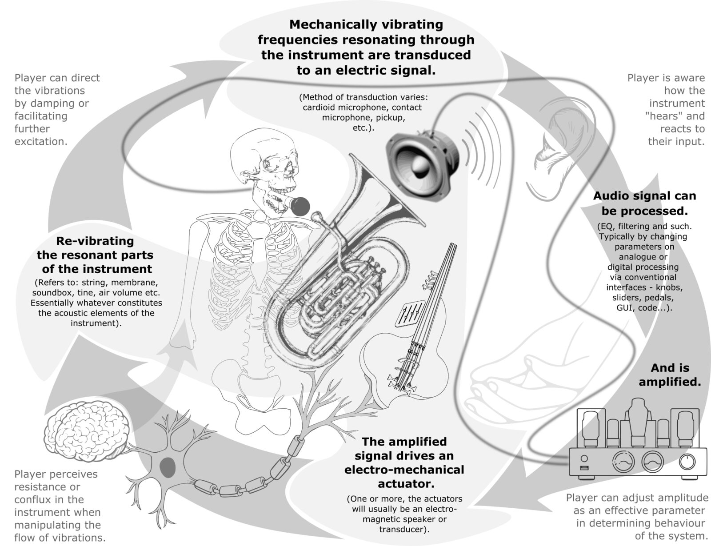
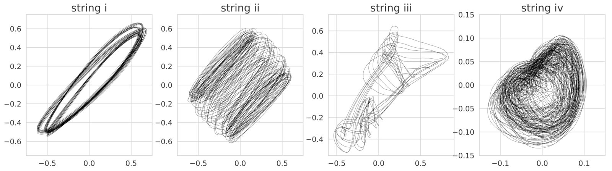

Self-resonating Vibrotactile Feedback Instruments \|\|: Making, Playing, Conceptualising :\|\|
Abstract
Self-resonating vibrotactile instruments (SRIs) are hybrid feedback instruments, characterised by an electro-mechanical feedback loop that is both the means of sound production and the expressive interface. Through the lens of contemporary SRIs, we reflect on how they are characterised, designed, and played. By considering reports from designers and players of this species of instrument-performance system, we explore the experience of playing them. With a view to supporting future research and practice in the field, we illustrate the value of conceptualising SRIs in Cybernetic and systems theoretic terms and suggest that this offers an intuitive, yet powerful basis for future performance, analysis and making; in doing so we close the loop in the making, playing and conceptualisation of SRIs with the aim of nourishing the evolution of theory, creative and technical practice in this field.
Author Keywords
Feedback resonator instruments, Feedback musicianship, Hybrid hyper-instruments, Complexity, Collaboration, Circular causality
CCS Concepts
Applied computing → Sound and music computing; Performing arts;
Hardware → Communication hardware, interfaces and storage; Tactile and hand-based interfaces;
Human-centered computing → Interaction design; Interaction design theory, concepts and paradigms
Attribution
All authors contributed equally to this paper.
Introduction
In recent years there has been an accelerating flurry of activity in the development of self-resonating vibrotactile instruments (hereafter SRIs) - instruments that employ feedback coupled electro-mechanical and acoustic components in a continuously re-amplified flow of vibrations, as their principle method of sound production and manipulation. These instruments typically employ an actuator and pickup (for simplicity we will use “pickup” to refer to any method of transducing acoustic vibrations to an electrical signal), coupled through resonant material(s), and connected in a feedback loop which invariably passes through analogue and/or digital signal processing. As illustrated in Figure 1, numerous interaction affordances are created for the player, who can intervene in the signal flow at various points, or interface via the physically resonating material (e.g. strings, membrane, air) of the instrument; these interventions influence the structure of the instrument and therefore the sound production and behavioural response. As acoustic-electronic/digital hybrids, they offer the gestural, embodied, intuitive affordances of the resonant physical bodies of acoustic instruments, and the real-time programmable, reconfigurable possibilities of electronic and software instruments [1] [2]. In offering feedback manipulation as the primary method of musician-machine engagement, they add to a growing coterie of NIMEs that challenge conventional top-down models of instrumental control and agency, and create new possibilities, as well as issues, in contemporary music, lutherie and instrumental practice.


Overview of SRI organisation and shared control with human player.
The halldorophone and tuba-thranophone are referenced as paradigmatic cases of SRIs in general.
Responding to the growing energy and excitement in this research field, the aim of this paper is firstly to unpack the emerging trends in lutherie and artistic practice, secondly to reflect on the experience of playing these instruments, and finally, to expound a conceptual framework to scaffold future work; in doing so we hope to create a productive feedback loop to nourish the evolution of creative and technical practice in this field. We start by locating SRIs within the wider historical landscape of feedback instruments; we next consider the ways in which self-resonating feedback instruments are assembled, and the phenomenological experiences reported by those that are developing committed SRI performance practices. In order to try and understand the experience of playing these instruments in terms of their material and systemic characteristics we take a journey into the language and concepts of early British cybernetics, systems theory and contemporary neuroscience; these concepts are not new in experimental music discourse, but we suggest that these are rich tools to add to NIME cultural compendium, offering both rich imagery to guide us in performance time, and precise analytic tools to help us better understand and make the next generation of instruments. We close by reflecting on the value of feedback musicking as complexity tutors.
Feedback Musicianship
SRIs follow a long tradition of instrument design and artistic practice that uses feedback as a creative material and method of engagement. Electroacoustic feedback was first characterised by Larsen [3], as convergence to a pure tone in a system with positive loop gain. The Larsen effect might be seen as problematic to instrument designers, for example in the early development of electric guitars. However, musicians soon began to develop techniques for manipulating the Larsen effect musically. Early examples are Guitar Slim’s hollow-body guitar feedback in the early 1950s, and Jimi Hendrix’s virtuosic use of guitar-amplifier feedback [4]. Beyond the world of guitar music, early experiments with feedback took a variety of forms: Eliane Radigue’s early work with microphones and tape machine feedback [5]; Nicolas Collins’ use of microphone and room acoustics in Pea Soup; David Tudor’s assemblages of actuated objects,’ Roland Kayn’s cybernetic synthesis systems; and works from Lucier, Reich, Cage, Mumma, Ashley, and many more (see [6] for an excellent summary and analytic framework).
More recent examples of burgeoning feedback musicianship encompass ecosystemic approaches (Di Scipio [7]), non-linear dynamical (Mudd [8] , Sanfilippo [9]) and interactive software systems (de Campo [10]), analogue synthesis (Watson [11]), no-input mixing [12], and the particular niche we focus on here, SRIs. While there are many ways to cut across the variety of forms in feedback instruments, we carve this division of SRIs based on how musicians engage with these instruments through embodied, vibrotactile interaction, and by locating them within the contexts of ongoing research in NIME on augmented and hyper-instruments.
Feedback and Self-Resonating Instruments
We see research in this area emerging in the 2000s with instruments such as the Feed-Drum, Bower’s and Sander’s Long String (described in [13]) and early halldorophones. Sanfilipoo and Valle’s 2013 review of feedback systems [6] draws together underlying principles and historical artistic practice. Our list of examplar instruments in (ref?) shows increasing recent activity in the development of new SRIs. We attempt to describe SRIs by looking at their characteristic design patterns and principles, the varieties of primary resonant materials used, the ways in which luthiers and performers experience these instruments, and the ways in which SRIs can be conceptualised based on common understandings of feedback musicianship, rooted in cybernetics and complex systems.
Making and Interacting with SRIs
In terms of fabrication SRIs make use of the same traditional handcrafting, modern prototyping and fabrication techniques, or some combination thereof as other NIMEs. Setting SRIs apart however is the nature of primary sound production mechanism, namely self-resonance through electro-mechanical feedback. This self-resonance through feedback is the core design pattern that distinguishes SRIs from other resonator instruments on the one hand (such as McPherson’s Magnetic Resonator Piano [14]) and non-resonating feedback instruments on the other (such as Hendrix’s guitar). As with traditional acoustic instruments, the resultant sound quality and behaviour of the instrument is intimately influenced by the resonant qualities of the constituent materials, the design and craftsmanship of assembleage, unlike other excellent software feedback instruments that have similar non-linear, complex dynamics (e.g.[7][8] [9] [10]).
Feedback musicianship originally evolved through exaptation (wherein a feature is utilised for a different function than originally intended): Musicians’ use and abuse of amplification led to the closing of a loop, creating feedback, an acoustic feature not originally intended by the designer(s) of the pickup/amplification system [4]. However, contemporary SRIs are a new species of feedback instruments in which designers and luthiers consciously and deliberately incorporate feedback loops as a central design principle to create self-resonance. We see this as an emerging track in the research field, and are excited by the possibilities of sound production and modes of interaction it affords.
Definition
We define self-resonating vibrotactile feedback instruments in terms of the following qualities:
A feedback loop is created between a pick-up and an electro-mechanical actuator via resonant material(s) (e.g. strings, membranes etc.) causing self-resonation. This is the primary sound producing mechanism; the properties of the resonant materials colour the vibrations, influencing the resultant acoustic properties of the instrument.
The self-resonating system is intimately sensitive to physical interaction by the player, creating the potential for vibrotactile interfaces through which the musician can influence the behaviour of the instrument.
Such vibrotactile playing incorporates direct and ongoing / sustained haptic interaction between performer and instrument, creating multiple modalities of embodied interaction for feedback musicianship affording rich musical expression and engaging performance.
(ref?) gives a representative but non-exhaustive list of the core examples of SRIs. The Parameter and Variable columns describe ways in which the player can influence the behaviour of the instrument; see below for further explication.
Name | Luthier (s) | Date | Primary Vibrotactile Medium | Pickup | Actuator | Key parameters | Key variables |
|---|---|---|---|---|---|---|---|
Fjaerlett [15] | Osen | 2020 | Springs | Spring Reverb transducers | gain, EQ | spring motion | |
Halldorophone [16] | Úlfarsson | 2008 | Strings | pickup (1 per string) | Speaker (rear- mounted) | individual string gain controls | string motion |
Overtone Fiddle [17] | Overholt | 2011 - | Strings | Magnetic pickups | Exciter | DSP processing parameters | string motion |
Feedbackers [18] | Blandhoel | 2011 | Strings | Guitar pickup | Speaker (front mounted) | Guitar Fx Pedals values | string motion |
Feedback Lap Steel [19] | Harriman | 2012 | Strings | Guitar Pickup | Mini bass shaker (bridge-mounted) | Digital effect parameters | string motion |
Half-closed Loop [20] | Bovermann | 2016 | String | Piezo | Exciters | Analogue effect parameters | tube position |
Feedback Cello [1] | Eldridge, Kiefer and Úlfarsson | 2016 | Strings | pickup (1 per string) | Speaker (rear- mounted) & exciters (body mounted) | controls for string gain, signal processing configuration and parameters | string motion |
Feedback Double Bass [21] | Liontiris & Úlfarsson | 2017 | Strings | pickup (1 per string) | Speaker (rear- mounted) | individual string gain controls | string motion |
Feral Cello [22] | Davis & Reid | 2018 | Strings | Acoustic cello pickup | Exciter | DSP processing parameters | string motion |
FAAB [2] | Melbye & Úlfarsson | 2020 | Strings | pickup (1 per string) | Speaker (rear- mounted) | individual string gain and filtering (DSP regulated) | string motion |
VOLA [23] | Stapleton | 2019 | Metal / plastic | Piezo | Exciters | Amplification, DSP, parameters, exciter arrangement | system physical arrangment |
Hybrid Resonant Assemblages [24] | Bowers and Haas | 2014 | Various | Piezos | Exciters | Configuration of resonant materials | resonant materials vibration |
Thranophone #2 [25] | Hjalmarsson, Erlendsson | 2009 | Air | Microphone in mouth | Speaker | Amplification volume | air cavity |
Feedback-augmented Alto Clarinet [26] | Manousakis | 2011 | Air | Internal and external microphones | Speaker | External signal processing | air cavity |
Feedback Trombone [27] | Snyder, Mulshine and Erramilli | 2018 | Air | Microphone | Speaker driver | DSP controls | breath |
Feed-Drum [28] | Lupone | 2002 | Drum membrane | Piezo | Speaker | Gain pedal | membrane motion |
Pulse/ /Wave [29] | Abolaffio and Anzani | 2019 | Wooden surface | Wearabe microphone | Exciter | - | touch |
Piezothing [30] | Araya | 2020 | Any surface | Piezo | Exciter | Arrangement in relation to resonant materials | resonant material motion |
C-Bow [31] | Marino | 2020 | Any surface | Piezo | Exciter | Arrangement in relation to resonant materials | resonant material motion |
Polycarbonate Plate [32] | Brandtsegg | 2020 | Polycarbonate | Piezo (finger mounted) | Exciter | Transducer placement | plate motion, finger position and tension |
We can also make a grouping of these instruments through their primary resonant materials, which also define their main sonic and expressive affordances.
Strings and Springs
These instruments typically use one or several exciters to vibrate a surface which vibrates a string. For example, the halldorophone and family of feedback string instruments (including cellos and basses) vibrate an acoustic body through a mounted speaker which in turn vibrates their strings. The Fjaerlett slightly differs by directly vibrating its springs. The player can then engage with the instrument directly by touching, exciting or damping the strings or body. Electromagnetic pickups transduce the mechanical vibration of the strings into an electrical signal which is processed and amplified.
Air and Tubes
In these instruments the air column is resonated by a speaker; players engage with them through touch (valves or keys) or by altering the shape of their mouth cavity which extends the instrument body; tactile perception of the vibrations in the instrument body plays an important proprioceptive role. These instruments take varying approaches to transducer placement; in the most played version of the thranophone the feedback is created between a microphone in the player’s mouth and a speaker mounted in the bell of a tuba; varying position of the speaker creates a further expressive interface. The feedback trombone reverses this arrangement, and the feedback clarinet uses multiple microphone placements throughout the system.
Membranes and Surfaces
These instruments use piezo contact microphones to pick up surface vibrations either mounted directly on the surface, or in the special case of Brandtsegg’s polycarbonate plate, mounted on the finger, such that the finger becomes part of the vibrational pathway of the instrument. The Piezothing and C-Bow are both portable and surface-agnostic, allowing manipulation through device placement and surface damping or excitement.
Assemblages
Many of these instruments could be classed as assemblages; others are primarily characterised as being such. Stapleton’s Volatile Assemblage (VOLA) includes a resonant metal chamber, vibrated with an exciter, and with different materials and devices that can be introduced into the actuated feedback loop (string, balls, rods).
Signal Processing
Many of these instruments use gain control besides manipulating physical resonances as the main point of interaction, while others take varied approaches to signal processing. The thranophone (as played by Ingi Garðar Erlendsson) optionally includes an array of guitar pedals, and the Fjaerlett offers analog equalisation. Others afford digital signal processing allowing for system state analysis and manipulation; the FAAB has embedded DSP on a Bela board, the Feral Cello is routed through Max/MSP and the Feedback Cello can switch between algorithms in SuperCollider. These external processes are manipulated either by on-body controls (e.g. the halldorophone) or external devices (foot pedals, mixers, laptops), principally using scientific instrumentation style controls and/or GUIs. In the case of CoFlo [33], signal processing is directly intended to shape instrument behaviour as well as sound.
Experiencing SRIs
Examining the qualities of playing SRIs compared to that of musical instruments where input has a more predictable, consistent output, we find a commonly reported theme of having to dialogue with the instrument. This resonates with ongoing discussions in contemporary music that question conventional assumptions of top-down, linear performance models [34][35][36]. In the words of composer and thranophone player Ingi Garðar Erlendsson [37]:
“For a composer it's amazing that I cannot trust the instrument being the same today as it was yesterday…
Interviewer: How do you feel about that?
Ingi: I think that's great! I'm enjoying the instrument more and more. I like that I can't be sure if the instrument is always going to be the same. Also my composition is such that I'm always re-inventing the method, and I really like that, having an instrument that forces me to continually re-discover it.”
There is also a sense of having to engage SRIs in a fundamentally different way to the acoustic instrument it is based on (when applicable), as for double bass player Adam Pultz Melbye when playing the FAAB: “The adaptive and often nonlinear behaviour of the instrument imbues it with a sense of autonomy that, on the one hand supports exploration, and on the other, resists the traditional notion of instrumental mastery” [38].
SRI players can become emphatic about the joy of negotiating a responsive but chaotic instrument, as Úlfarsson found in interviews with long term users of his halldorophone; this is encapsulated beautifully by composer (and performer of her own music) Hildur Guðnadóttir:
“You need to be a 110% present physically, if you even move your knee or something he might decide to stop and I find that thrilling. How you have to adjust your whole approach to the instrument and how conscious I have to be of my whole body...” [39]
This focusing of attention is reported by Paul Stapleton, who describes the experience of the instrument in the language of complex systems:
“Playing with self-resonating feedback instruments demands that I pay close attention. The most satisfying feedback music seems to be at the thresholds and breaking points, and these are rarely stable. And this is a good thing, because stability (or equilibrium) actually means death, where uncertainty, chaos and contingent connections are the realm of the living.” [40]
In fact there is anecdotal evidence from the work of Snyder et al to suggest that players feel quite disappointed when the characteristics wildness of SRIs is dialled down. In their research, a parameter was introduced to use the feedbacking mechanism primarily as a method to drive accurate note generation. The reported that:
“The performers liked the wildness of the feedback mode, but actually found very little sonic difference between “synthesis mode” and “feedback mode” when the Q of the bandpass filter was high enough to force near instantaneous changes between partials. A very high Q on the filter and a quantized stepping between cutoff frequencies were both settings on the instrument that increased the pitch accuracy of “feedback mode”, but the resulting gain in stability was accompanied by a loss of what was characteristically exciting about the feedback sound. This suggested that in order to make the feedback mechanism worth implementing, certain elements and artifacts of that sound needed to be preserved, such as the characteristic struggling timbral shift as feedback breaks from one partial to another.”[27]
Comments from performers suggest that these SRIs are approached as somewhat lively beasts and render obsolete the classical interaction metaphors of musical instruments both acoustic and digital: learned and fixed sensory motor contingencies which underly virtuosity in the classical sense are out the window: control and mastery gives way to a sense of following a path as it unfolds [41]. But the path also changes. The job of the performer in SRIs is not to inject energy into the system and completely control the instrument (as in classical string, wind or percussion instruments), but to navigate along, intervene in, negotiate or even argue with the pre-existing flows of (vibrational) energy. In other words: Feedback performance is quintessentially processual: It is the antithesis of what Ingold describes as Hylomorphic Making — the Aristotelean concept of imposing a predetermined form (morphe) on matter (Hyle) [42]: rather than deciding first and then acting, in playing SRIs decisions unfold within ongoing actions.
SRI players, all comment on the appeal of these uncontrollable, unpredictable systems, often ascribing them musical agency. Metaphors are useful in performance, but as engineers how can we understand the origins of this agency? can we relate performance phenomenology to systemic structure, material properties? can we infer and therefore evolve design principles?
Conceptualising SRIs
“We start by assuming that we have before us some dynamic system … We wish to study it” - Ross Ashby Design for a Brain [43] p.13
Many musicians are drawn to using cybernetic language, often sprinkled in discourse with other poetic language of that ascribes agency, autonomy, and/or composerly control to their instruments or performance systems. These perspectives are complementary to other more symbolic conceptualizations of instrumentality, as exemplified in Magnusson's work [44], in focusing on dynamic and behavioral processes. The language of dynamical systems theory and cybernetics is a rich source of poetic metaphor which perfectly captures the behaviour we experience in these instruments; but it is also a precise technical language allied with mathematical analysis tools and this has been less well explored. The desire to understand the relationship between formal system structure and resultant behaviour lay at the heart of the early cybernetic enterprise. We see at least three reasons therefore why it is useful to adopt these terms formally when working with SRIs. Firstly, the aim of systems thinking in general is to describe the behaviour of a system irrespective of the materials in which it is constituted (mechanical, biological etc.) - this helps to focus on general design principles rather than specific examples. Secondly, we are interested in better understanding what it is about these instruments that invite attributions of agency, but to use language that ascribes intentionality to the instrument is circular: we want to understand the qualities of the instrument behaviour that as players we perceive to take an active role in the musical dialog. Cyberneticians like Ross Ashby were concerned with understanding the origins of adaptive behaviour in terms of system structure, so similarly withheld from teleological descriptions. This language is both poetic, and precise; it meets our needs as musicians and makers.
Thirdly, we are interested in analysis for the sake of future synthesis - to keeping iterating around the loop of making, playing, reflecting and to complement musical experimentation with empirical experimentation. But our instruments are too complex for standard analyses: For example, if we want to better understand the relationship between the physical structure of a violin body, the sound it makes and the experience of playing it, we can do experiments like modal testing. But SRIs are typically more and less tightly knit assemblages of a variety of different materials, often in dynamic relationships, such that they defy traditional methods of acoustic/ mechanical analysis just as they defy classical metaphors of musical interaction. Cybernetic terms were created precisely for describing and analysing dynamic, complex systems, where traditional analysis (conceptual and technical) fail. Language and concepts that help us better conceptualise, discuss as well as analyse the behaviour of the instruments can support the next iteration, generation or species of SRIs.
In defining dynamic systems, Ashby starts with variable which he defines as “a measurable quantity which at every instant has a definite numerical value” ([43] p 14). In digital instruments, every variable is declared and defined by its musician-coder creator (perhaps mediated by a neural network or other statistical model) this is deeply familiar; in the acoustic and analogue components of feedback instruments, we cannot specify every variable, but we are learning which are the most influential (such as micro-settings on DSP). A system then is simply “an arbitrary selected set of variables”, which are nominated by the experimenter. We draw the system boundary to suit our concerns; in Figure 1 we consider the player and instrument as separate but coupled systems, so that we can better understand how the structure of the SRI gives rise to its characteristic dynamical behaviours. At other times it might be valuable to consider sub-systems of the instrument. For example, Fig 2. shows phase portraits of each of the strings of a Feedback Cello (FBC). In other cases we cannot sensibly separate performer from instrument, as in the thranophone where the pickup (cardioid microphone) is placed inside the player’s mouth and their mouth cavity completes the acoustic chamber within which the primary resonant medium (air) vibrates.
The state of the system is described by the values of its variables at a specific instant. For example, we can describe the state of strings on a FBC by measuring the amplitude of the signal on their respective pick-ups. A line of behaviour is specified by a trajectory between states. This formal definition of behaviour aligns well with our intuitive use of the term: the FBC behaves differently when we bow it or strike it.
The behaviour of an oscillator is cyclical; such simple behaviours can be described mathematically, but most short and long term SRI behaviours defy such description and are better represented in phase-space. A phase portrait is an N dimensional plot of N variables against each other (imagine a system composed of 2 variables, then its state can be represented by two numbers and its line of behaviour can be plotted for all the states it passes through). Phase portraits of higher dimensional systems can also be generated from time-series data using embedding methods. We can infer the behaviour of the strings by recording the signal from the pick-ups and generating a phase portrait for each (Fig 2). This analysis gives insight into how the cross-coupling between strings is dependent on their tuning and alters the behaviour of the whole instrument system and complements intuition and experimentation in choosing appropriate tunings (aka system parameters)


Fig 2. Phase space reconstructions using time-delay embeddings provide portraits for each of the four main strings on a feedback cello in action. Axes denote relative amplitude.
As an example of putting these concepts into play: If we plotted a phase portrait for each string for every possible state of every other part of the feedback cello, we would gain insight into the system’s field - the phase space containing all the lines of behaviour found by releasing the system from all possible initial states. This is known as a field of attractors in complexity science. The SRI player will discover attractors through exploration of resistances and confluences of the instrument, and can play the instrument by attempting to navigate trajectories between attractors. They might also experience a ‘golden-zone’ where a delicate balance of multiple attractors offers a rich though transient landscape.
Finally, a variable not included in the system is a parameter. As Ashby describes “A change in the value of an effective parameter changes the line of behaviour from each state.” (p 72) It follows then that a change in the value of an effective parameter changes the field of behaviours. In performing with SRIs, actions through which we navigate attractors, can also effectively re-parameterise the system, such as detuning a string-based SRI, such that attractors can shift or disappear.
These basic terms that Ashby takes pains to clearly define for his investigation of the origins of adaptive behaviour provide a convenient frame to understand the relationship between the structure of our instruments and their possible behaviours. For example, understanding phase space in terms of number of variables formalises intuitions and experience that these SRIs afford greater musical complexity than the naked Larsen effect between a speaker and a mic in the open air. There are a greater number of variables in play, so also a larger state space and wider field of possible behaviours. When designing or preparing for performance, decisions over setting of high-level gains, filter coefficients, tightness of transducer screws, material properties of primary resonators, tube length or string tuning, are all parameters which define the set of possible behaviours.
These helps us differentiate the parameter settings which define the range of behaviours (field) - main gain setting, string tuning, changes to length of thranophone with hosepipe - versus those performance-time changes that perturb the system within the lines of a given behaviour; we might also reconfigure parameters in performance time and then we are faced with a new instrument.
“Being a composer it's amazing that I cannot trust the instrument, that it is the same today as it was yesterday, that it is the same in one space or another. Although usually it's quite similar.” - Ingi
We tentatively suggest a core design principle of SRIs is to create systems with multiple attractors, as opposed to the vanilla Larsen effect or single string system which is itself complex in the technical sense, but always settles to the same single point.
Having understood this basic relationship between parameters, variables and behaviours, wider Cybernetic and systems thinking can help us understand the particular alluring, uncontrollable characteristics. The recursive feedback at the heart of these instruments creates a circular causality [45]: cause and effect - origin and consequence - cannot be distinguished. Circular causality in turn creates non-linearity (see [46] [47] for a full explanation in terms of superposition). Non-linearity means that small changes (at any point in the system - Fig 1) can have a profound effect on system behaviour.
As well as small parameter changes creating changes in the behavioural state space, this non-linearity creates the fundamentally and delightfully unpredictable behaviour that is characteristic of feedback instruments: the familiar gesture-sound producing mapping of the acoustic cello is not only radically disrupted, but as predictability decreases, expectation and control become less viable performance strategies. Interface-acoustic mappings are not only non-linear but rapidly and at times unpredictably reconfigured: any learned sensory-motor contingencies may (or may not) be redundant.
Beyond simply unpredictable, many musicians intuitively use language that ascribes musical agency to SRIs. How can we similarly understand this experience? Sitting at the intersection of music, aesthetics, engineering and philosophy, agency, or perhaps more simply, autonomy can mean a wide variety of things: mathematics (ordinary differential equations which does not explicitly depend on the independent variable) politics (self-governance), robotics (the ability to self-recharge), biology (organisational closure); as a lively, but not living system and sharing an interest in practical applicability, we find the Artificial Life approach useful. Here autonomy is defined in terms of the degree of self-determination of a system [48]. More recently in Neuroscience, Seth has amplified Bertschinger and colleagues’ definition [49] to understand autonomy as a system that is not fully determined by it’s environment [50], whilst noting that a random system should not have a high autonomy value. As above, following Ashby, the environment of the feedback instrument consists of both the performer (including body and cognitive system) and the ambient space within which its signals flow (typically a spatially extended room).
This concept of self-determination captures Feedback musician’s descriptions of the experience of performing with SRIs: “When things are going well, playing VOLA’s feedback and resonances feels like dancing with another partner. My training, decisions and actions matter during performance, but they clearly don’t exclusively determine the resulting music.” - Paul Stapleton [51]
The degree to which a system is determined by its environment can also be measured using time-series causality measures (e.g. [52] , [53]). This provides an analysis tool with which to better understand the experiential affordances of particular parameter settings, material or systemic changes in instrument design, so better informing the iterative design and practice loop. We might sensibly question whether the instruments are really unpredictable, or whether we just haven’t done enough practice yet. Under this definition we can check. Systems language therefore is not only a productive creative metaphor but a critical analysis tool in supporting our iterative cycle of making and playing new musical instruments.
Finally, Ashby’s Law of Requisite Variety is useful in helping us understand the role of performance practice, not in ‘mastering’ the instrument in terms of absolute control, but in maintaining musically-viable and interesting behaviour. We noted above that a larger state space afforded a wider range of behaviours. The Law of Requisite Variety states that: “The larger the variety of actions available to a control system, the larger the variety of perturbations it is able to compensate” [43] . In other words, the state space of the ‘control’ system has to be at least as large as the state space of the physical system it’s controlling (if you want to balance a broom on your finger, you need to be able to move left and right as well as forwards and backwards). If it isn’t, then the physical system can get into states that the control system won’t be able to deal with. Increasing complexity of the components of SRIs increases the musical possibilities by creating richer variable space - and therefore state space and space of musical possibilities: but this requires practice and a new form of mastery - the musical technique to dance with the instrument along the lines of behaviour as they emerge. This need is already recognised and expressed in the first generation of feedback experts:
“But it really is a monster now because you have so many options for playing. Which I don't think people recognized in the beginning, because it's basically just feedback so I don't think people recognized how rich it can be. The perception was that it is too primitive. But taking it from there if you, hmm, take care, if you practice the system, the instrument, if you develop a performance practice and work through [technical] problems that come up it's cool.” - Ingi
Summary and Conclusion
We have sketched out the feedback path that defines the SRIs and attempted to tell a circular story that couples material and schema, experience and formal principles. Through the lens of contemporary instruments, we have examined design patterns, concepts, and principles in making SRIs; we have shared experiences of performers and makers and dove deep into cybernetic and systems principles in order to explore whether the language we intuitively use of autonomy, complexity and attractors is formally defensible and accurate, and more imporantly productive and generative.
Taking a journey into the careful conceptual definitions and language of Ross Ashby, together with wider systems thinking we have shown that this language does indeed help us conceptualise and analyse our SRIs, providing formal insights that align with experiential reports which begin to point to guiding heuristics, if not design principles for future SRIs. These formal and conceptual tools support out intuitive performance-time experiments, informing future instrumental practice and feedback musicianship. We find that, through making, playing with, contemplating and conceptualising these instruments they are first grade complexity tutors: in assembling them we come to understand how complexity emerges from the interaction of simple components, in this case coupled together with feedback; and in playing them we come to learn that life is not necessarily most fun when we are in control.
Acknowledgements
With thanks to Ingi Garðar Erlendsson and Paul Stapleton for interviews. This paper is supported by the AHRC Feedback Musicianship Network, AH/T013664/1.
Citations
- ↩Eldridge, A., & Kiefer, C. (2017). The self-resonating feedback cello: interfacing gestural and generative processes in improvised performance. Proceedings of New Interfaces for Music Expression 2017, 2017, 25–29.
- ↩Melbye, A. P., & Ulfarsson, H. A. (2020). Sculpting the behaviour of the Feedback-Actuated Augmented Bass: Design strategies for subtle manipulations of string feedback using simple adaptive algorithms. In R. Michon & F. Schroeder (Eds.), Proceedings of the International Conference on New Interfaces for Musical Expression (pp. 221–226). Birmingham, UK: Birmingham City University. Retrieved from https://www.nime.org/proceedings/2020/nime2020_paper42.pdf
- ↩Boner, C. P., & Boner, C. (1966). Behavior of sound system response immediately below feedback. Journal of the Audio Engineering Society, 14(3), 200–203.
- ↩McSwain, R. (2002). The social reconstruction of a reverse salient in electrical guitar technology: Noise, the solid body and Jimi Hendrix. Music and Technology in the Twentieth Century, 186–198.
- ↩Gluck, B. (2010). An Interview with Eliane Radigue. Array., 45–49.
- ↩Sanfilippo, D., & Valle, A. (2013). Feedback systems: An analytical framework. Computer Music Journal, 37(2), 12–27.
- ↩Di Scipio, A. (2003). Sound is the interface: from interactive to ecosystemic signal processing. Organised Sound, 8(3), 269–277.
- ↩Mudd, T. (2019). Between Chaotic Synthesis and Physical Modelling: Instrumentalising with Gutter Synthesis. In Procedings of the Conference on Compuation, Communication, Aesthetics and X (xCoAx) (pp. 217–228).
- ↩Sanfilippo, D. (2020). Complex musical behaviours via time-variant audio feedback networks and distributed adaptation: a study of autopoietic infrastructures for real-time performance systems.
- ↩De Campo, A. (2014). Lose control, gain influence-Concepts for Metacontrol. In ICMC.
- ↩Watson, J. (2020). Growing cybernetic ears: transduction and performativity in the analogue and digital what have you.
- ↩Chamberlain, A. (2018). Surfing with sound: an ethnography of the art of no-input mixing.
- ↩Waters, S. (2007). Performance Ecosystems: Ecological approaches to musical interaction. EMS: Electroacoustic Music Studies Network, 1–20.
- ↩McPherson, A. (2010). The magnetic resonator piano: Electronic augmentation of an acoustic grand piano. Journal of New Music Research, 39(3), 189–202.
- Osen, K. (n.d.). Fjaerlett. Retrieved from https://tilde-elektriske.com/fjaerlett
https://tilde-elektriske.com/fjaerlett, accessed Jan 2021
↩ - ↩Úlfarsson, H. (2018). The halldorophone: The ongoing innovation of a cello-like drone instrument. In T. M. Luke Dahl Douglas Bowman (Ed.), Proceedings of the International Conference on New Interfaces for Musical Expression (pp. 269–274). Blacksburg, Virginia, USA: Virginia Tech. https://doi.org/10.5281/zenodo.1302579
- ↩Overholt, D. (2011). The Overtone Fiddle: an Actuated Acoustic Instrument. In Proceedings of the International Conference on New Interfaces for Musical Expression (pp. 30–33). Oslo, Norway. https://doi.org/10.5281/zenodo.1178127
- Blandhoel, C. (2021). Feedbacker. Feedbacker. Retrieved from http://www.ijin.no/feedbacker.htm
http://www.ijin.no/feedbacker.htm, accessed Jan 2021
↩ - ↩Harriman, J. (2015). Feedback Lapsteel : Exploring Tactile Transducers As String Actuators. In E. Berdahl & J. Allison (Eds.), Proceedings of the International Conference on New Interfaces for Musical Expression (pp. 178–179). Baton Rouge, Louisiana, USA: Louisiana State University. https://doi.org/10.5281/zenodo.1179076
- ↩Bovermann, T. (2016). Half-closed loop—an improvisation environment for covered string and performer. Proceedings of the ICLI, 2016.
- ↩Liontiris, T. P. (2018). Low Frequency Feedback Drones: A non-invasive augmentation of the double bass. In NIME (pp. 340–341).
- ↩Davis, T., & Reid, L. (2020). Taking Back Control: Taming the Feral Cello. In R. Michon & F. Schroeder (Eds.), Proceedings of the International Conference on New Interfaces for Musical Expression (pp. 416–421). Birmingham, UK: Birmingham City University. Retrieved from https://www.nime.org/proceedings/2020/nime2020_paper81.pdf
- ↩STAPLETON, P. (2019). Uncertain Rhythms. NIME Music Proceedings.
- ↩Bowers, J., & Haas, A. (2014). Hybrid Resonant Assemblages: Rethinking Instruments, Touch and Performance in New Interfaces for Musical Expression. In Proceedings of the International Conference on New Interfaces for Musical Expression (pp. 7–12). London, United Kingdom: Goldsmiths, University of London. https://doi.org/10.5281/zenodo.1178718
- HJÁLMARSSON, Þ. (n.d.). Thranaphones. Retrieved from http://thrainnhjalmarsson.info/
http://thrainnhjalmarsson.info/, accessed Jan 2021
↩ - Stelios, M. (n.d.). Feedback-Augmented Alto Clarinet. Retrieved from http://modularbrains.net/portfolio/feedback-augmented-alto-clarinet/
http://modularbrains.net/portfolio/feedback-augmented-sopranino-clarinet/, accessed Jan 2021
↩ - ↩Snyder, J., Mulshine, M., & Erramilli, R. (2018). The Feedback Trombone: Controlling Feedback in Brass Instruments. In NIME (pp. 374–379).
- Lupone, M., & Seno, L. (2005). Gran cassa and the adaptive instrument feed-drum. In International Symposium on Computer Music Modeling and Retrieval (pp. 149–163).
http://www.crm-music.it/index.php?option=com_content&view=article&id=56&Itemid=146&lang=en, accessed Jan 2021
↩ - ↩Abolafio, & Anzani. (2019). Pulse Wave. Pulse Wave. Retrieved from https://micheleabolaffio.wordpress.com/works/pulse-wave/
- Araya, D. (2020). Piezothing. Retrieved from https://araya.se/
https://araya.se/, accessed Jan 2021
↩ - Marino, L. (2020). C-Bow — An e-bow for cymbals or any resonant surface. C-Bow — An e-bow for cymbals or any resonant surface. Retrieved from http://www.luigimarino.net/building/c-bow.html
http://www.luigimarino.net/building/c-bow.html, accessed Jan 2021
↩ - Brandtsegg, O. (2020). Polycarbonate Plate Demo Video. Polycarbonate Plate Demo Video. Retrieved from https://oeyvind.github.io/vibrotactile/2020/10/16/demovideo.html
https://oeyvind.github.io/vibrotactile/2020/10/16/demovideo.html, accessed Jan 2021
↩ - ↩Kiefer, C., Overholt, D., & Eldridge, A. (2020). Shaping the behaviour of feedback instruments with complexity-controlled gain dynamics. In 20th International Conference on New Interfaces for Musical Expression (pp. 343–348).
- ↩Tuuri, K., Parviainen, J., & Pirhonen, A. (2017). Who controls who? Embodied control within human–technology choreographies. Interacting with Computers, 29(4), 494–511.
- ↩Gurevich, M., & Trevi∼no, Jeffrey. (2007). Expression and its discontents: toward an ecology of musical creation. In Proceedings of the 7th international conference on New interfaces for musical expression (pp. 106–111).
- ↩Green, O. (2011). Agility and Playfulness: Technology and skill in the performance ecosystem. Organised Sound, 16(2), 134.
- Ulfarsson, H. (2021). A Chat with Ingi Garðar Erlendsson . Emute Lab. Retrieved from https://www.emutelab.org/blog/IngiInterview
https://www.emutelab.org/blog/IngiInterview, accessed April 2021
↩ - ↩Ulfarsson, H., & Melbye, A. P. (n.d.). Sculpting the behaviour of the Feedback-Actuated Augmented Bass.
- Úlfarsson, H. (2019). Feedback Mayhem.
H. Ulfarsson. Feedback Mayhem: Compositional ´
↩
affordances of the halldorophone discussed by its
users. In Proc. ICMC, New York. 2019. Personal communication with Paul Stapleton 21. 01. 2021.
↩- ↩Varela, F. J., Thompson, E., & Rosch, E. (2016). The embodied mind: Cognitive science and human experience. MIT press.
- ↩Ingold, T. (2010). The textility of making. Cambridge Journal of Economics, 34(1), 91–102.
- ↩Ashby, W. (2013). Design for a brain: The origin of adaptive behaviour. Springer Science &Business Media.
- ↩Magnusson, T. (2009). Of Epistemic Tools: musical instruments as cognitive extensions. Organised Sound, 14(2), 168–176.
- ↩Von Foerster, H. (1952). Cybernetics; circular causal and feedback mechanisms in biological and social systems.
- ↩Heylighen, F., & others. (2001). The science of self-organization and adaptivity. The Encyclopedia of Life Support Systems, 5(3), 253–280.
- ↩Gershenson, C. (2007). Design and control of self-organizing systems. CopIt Arxives.
- ↩Boden, M. A. (1996). The philosophy of artificial life.
- ↩Bertschinger, N., Olbrich, E., Ay, N., & Jost, J. (2008). Autonomy: An information theoretic perspective. Biosystems, 91(2), 331–345.
- ↩Seth, A. K. (2010). Measuring autonomy and emergence via Granger causality. Artificial Life, 16(2), 179–196.
Personal communication Chris Kiefer and Paul Stapleton 21. 01. 2021.
↩- ↩Seth, A. (2007). Granger causality. Scholarpedia, 2(7), 1667.
- ↩Kathpalia, A., & Nagaraj, N. (2019). Data-based intervention approach for Complexity-Causality measure. PeerJ Computer Science, 5, e196.